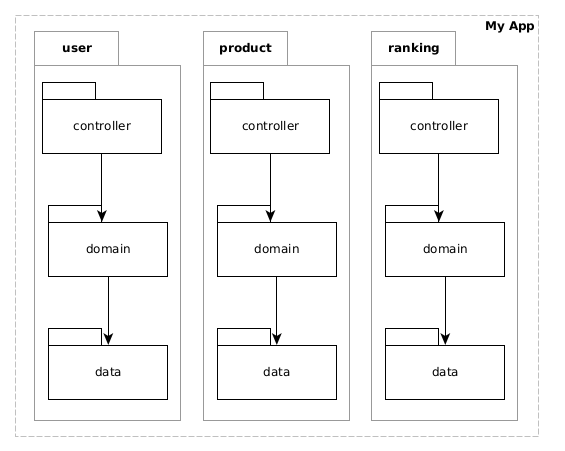
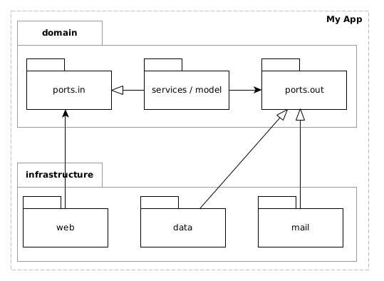

Paquetes, Diseño y Código
Enrique Molinari
Estructura de capas clara!
Ni bien abro un proyecto tengo que ver la estructura de capas bien clara!


Package by Layers Clásica

Package by Layers Clásica
Package by Layers (con modelo compartido)

Package by feature
Arquitectura Hexagonal (o ports and adapters)
Package by feature (layer y hexagonal)

Controllers flacos y modelos gordos. Empujen el código hacia lo más cerca del modelo que puedan.
@RestController
public class UserController {
@PostMapping
@ResponseStatus(HttpStatus.CREATED)
@Transactional
public User login(String username, String password) {
u = this.userService.findByName(username);
this.userService.validatePassword(u.getPassword(),password);
String token = getJWTToken(username);
u.setAccessToken(token);
this.userService.save(u);
}
}Controllers flacos y modelos gordos. Empujen el código hacia lo más cerca del modelo que puedan.
@RestController
public class UserController {
@PostMapping
@ResponseStatus(HttpStatus.CREATED)
@Transactional
public User login(String username, String password) {
this.userService.authenticate(username, password);
}
}Exceptions pertenecen a una capa o módulo
Exceptions pertenecen a una capa o módulo
Exceptions, ¿Cómo manejarlas?
Cada capa atrapa y lanza su exception o el framework que uso atrapa cualquiera y muestra mensaje
public class DomainClass {
void doSomething() {
try {
this.repo.doSomething();
} catch(DataException e) {
throw new DomainException(e, "Imposible hacer esto...");
}
}
}